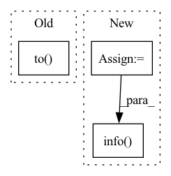

Pattern ID :33159
Before Change
logging.info(model)
model.apply(model.init_weights)
model.actions_before_train()
model.to( model.device)
// Run model
data_dict = dict()
for phase in ["train", "dev", "test"]:After Change
os.environ["CUDA_VISIBLE_DEVICES"] = args.gpu
args.device = torch.device("cpu")
if args.gpu != "" and torch.cuda.is_available():
args.device = torch.device("cuda")
logging.info("Device: {}".format(args.device))
// Read data
corpus_path = os.path.join(args.path, args.dataset, model_name.reader + ".pkl")
if not args.regenerate and os.path.exists(corpus_path):
logging.info("Load corpus from {}".format(corpus_path))
corpus = pickle.load(open(corpus_path, "rb"))
else:
corpus = reader_name(args)
logging.info("Save corpus to {}".format(corpus_path))
pickle.dump(corpus, open(corpus_path, "wb"))
// Define model
model = model_name(args, corpus).to(args.device)
logging.info( "//params: {}".format(model.count_variables()))
logging.info(model)
// Run model
data_dict = dict()In pattern: SUPERPATTERN
Frequency: 5
Non-data size: 3
Instances Fragment ID: 95837588
Project Name: thuwangcy/rechorus
Commit Name: 1990a3b0a81e17f87d94705868f12cead7fe06c7
Time: 2022-06-08
Author: THUwangcy@gmail.com
File Name: src/main.py
M Class Name: AnonimousClass
N Class Name: AnonimousClass
M Method Name: main(0)
N Method Name: main(0)
M Parent Class:
N Parent Class:
M File Name: src/main.py
N File Name: src/main.py
M Start Line: 43
M End Line: 79
N Start Line: 42
N End Line: 78
Before Change
y_good = y[0]
y_good = y_good.reshape((1,1,1))
x_good = x_good.to(DEVICE)
y_good = y_good.to( DEVICE)
onehot_encoder = utils.make_onehot_encoder(label_features)
y_good = onehot_encoder(y_good.item()).to(DEVICE)
y_good = y_good.reshape((1, 1, y_good.shape[0]))After Change
// y_good = torch.unsqueeze(torch.unsqueeze(y_good, 0), 0)
// x_recon = model(x_good.float(), y_good.float())
x = input_data
y = input_label
x_recon = model(x,y) // has shape [batch_size, seq_len, 159]
logging.info("xrecon has")
logging.info( x_recon.shape)
_, seq_len, _ = x.shape
x_formatted = x[0].reshape((seq_len, -1, 3))
x_recon_formatted = x_recon[0].reshape((seq_len, -1, 3)) Fragment ID: 95837557
Project Name: bioshape-lab/pirounet
Commit Name: 149d8ab584d8a5bd20c5f508a727bb53b470cc0f
Time: 2022-05-17
Author: papillon@umail.ucsb.edu
File Name: move/generate_f.py
M Class Name: AnonimousClass
N Class Name: AnonimousClass
M Method Name: recongeneral(8)
N Method Name: recongeneral(8)
M Parent Class:
N Parent Class:
M File Name: move/generate_f.py
N File Name: move/generate_f.py
M Start Line: 367
M End Line: 382
N Start Line: 384
N End Line: 388
Before Change
token_ids = torch.unsqueeze(torch.LongTensor(input_ids), 0).to(self.device)
attention_mask = torch.unsqueeze(torch.LongTensor(encode_results.get("attention_mask")), 0).to(self.device)
segment_ids = torch.unsqueeze(torch.LongTensor(encode_results.get("token_type_ids")), 0).to(self.device)
model_outputs = self.model(token_ids, attention_mask, segment_ids).detach().to( "cpu")
model_output = torch.squeeze(model_outputs)
results = self.data_manager.extract_entities(sentence, model_output)
results_dict = {}
for class_id, result_set in results.items():After Change
预测接口
start_time = time.time()
encode_results = self.data_manager.tokenizer(sentence, padding="max_length")
input_ids = encode_results.get("input_ids")
token_ids = torch.unsqueeze(torch.LongTensor(input_ids), 0).to(self.device)
attention_mask = torch.unsqueeze(torch.LongTensor(encode_results.get("attention_mask")), 0).to(self.device)
segment_ids = torch.unsqueeze(torch.LongTensor(encode_results.get("token_type_ids")), 0).to(self.device)
logits, _ = self.model(token_ids, attention_mask, segment_ids)
logit = torch.squeeze(logits.to("cpu"))
results = self.data_manager.extract_entities(sentence, logit)
self.logger.info( "predict time consumption: %.3f(ms)" % ((time.time() - start_time) * 1000))
results_dict = {}
for class_id, result_set in results.items():
results_dict[self.data_manager.reverse_categories[class_id]] = list(result_set)
return results_dict Fragment ID: 95837568
Project Name: stanleylsx/entity_extractor_by_pointer
Commit Name: 53fb785dbe629c71f02b0f58a40d3f36e5eb3dc2
Time: 2022-06-08
Author: gzlishouxian@gmail.com
File Name: engines/predict.py
M Class Name: Predictor
N Class Name: Predictor
M Method Name: predict_one(2)
N Method Name: predict_one(2)
M Parent Class:
N Parent Class:
M File Name: engines/predict.py
N File Name: engines/predict.py
M Start Line: 31
M End Line: 35
N Start Line: 30
N End Line: 39
Before Change
print(device)
dbnet = DBTextModel().to(device)
dbnet.train()
criterion = DBLoss(alpha=1, beta=10, negative_ratio=3,
reduction="mean").to( device)
db_optimizer = torch_optim.Adam(dbnet.parameters(),
lr=0.001,
weight_decay=0.0,
amsgrad=False)After Change
)
// setup log folder
log_dir_path = os.path.join(cfg.meta.root_dir, "logs")
if not os.path.exists(log_dir_path):
os.makedirs(log_dir_path)
tfb_log_dir = os.path.join(log_dir_path, str(time.time()))
logger.info( tfb_log_dir)
if not os.path.exists(tfb_log_dir):
os.makedirs(tfb_log_dir)
tfb_writer = SummaryWriter(tfb_log_dir)
Fragment ID: 95837532
Project Name: huyhoang17/db_text_minimal
Commit Name: 1ccb73f6566551e5b6640c2b14d69b2a3d2334d8
Time: 2020-06-02
Author: hoangphan0710@gmail.com
File Name: src/train.py
M Class Name: AnonimousClass
N Class Name: AnonimousClass
M Method Name: main(1)
N Method Name: main(0)
M Parent Class:
N Parent Class:
M File Name: src/train.py
N File Name: src/train.py
M Start Line: 58
M End Line: 250
N Start Line: 62
N End Line: 283